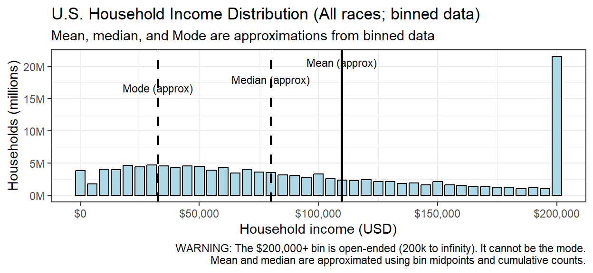
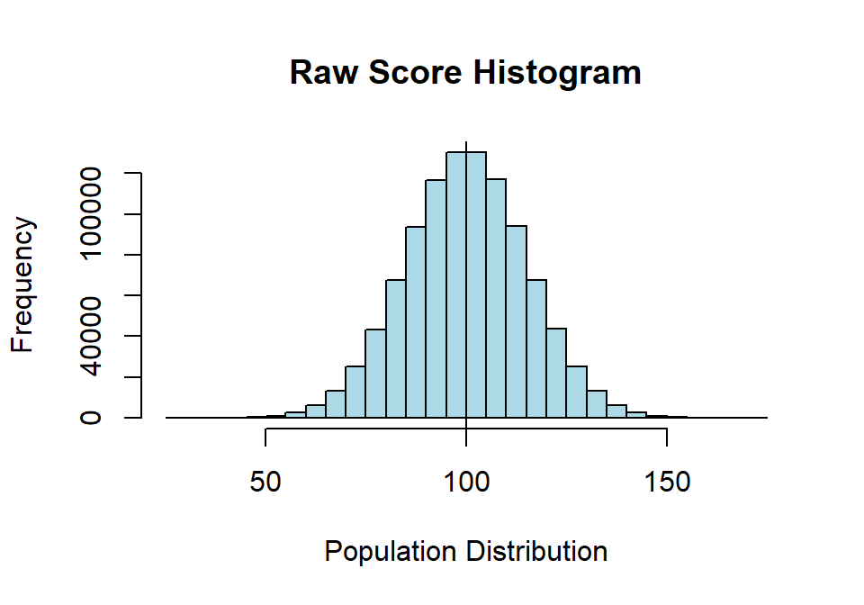
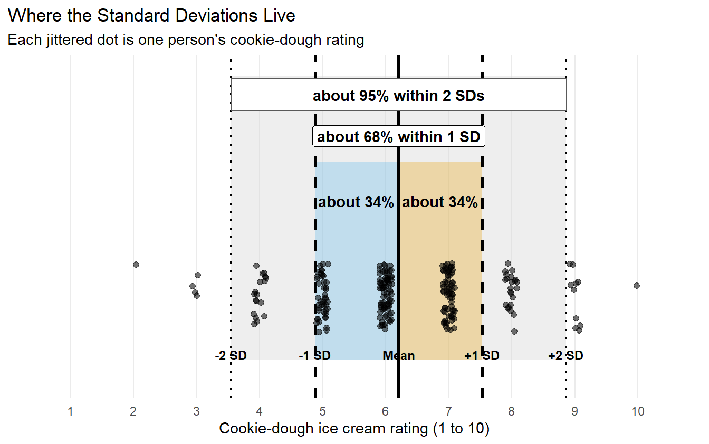
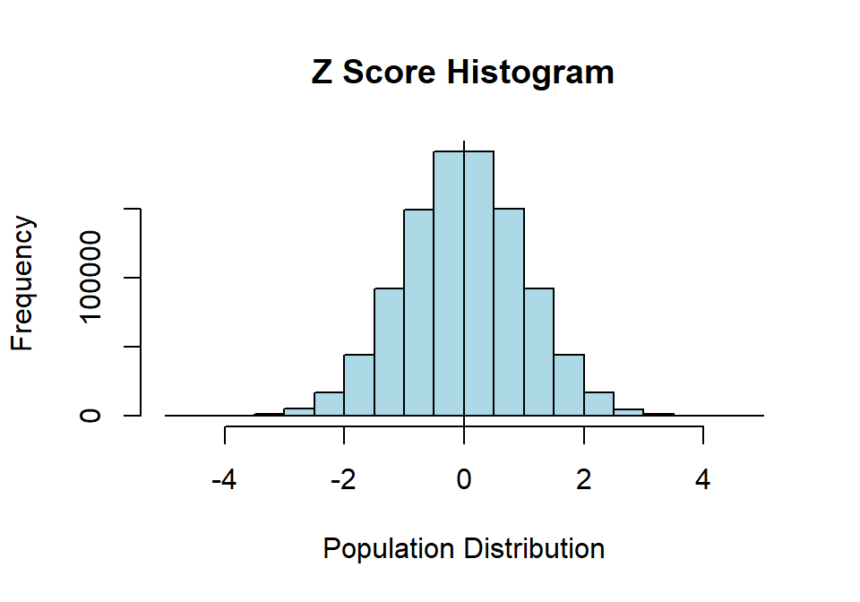
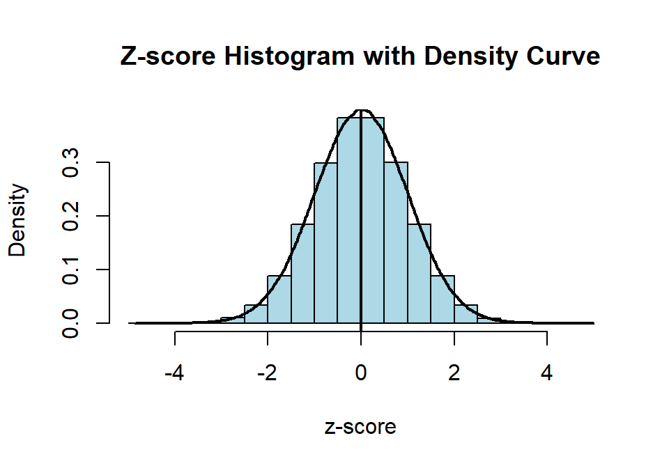
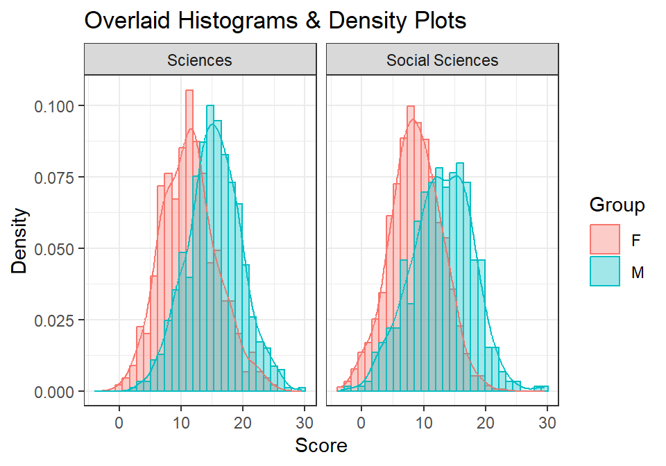
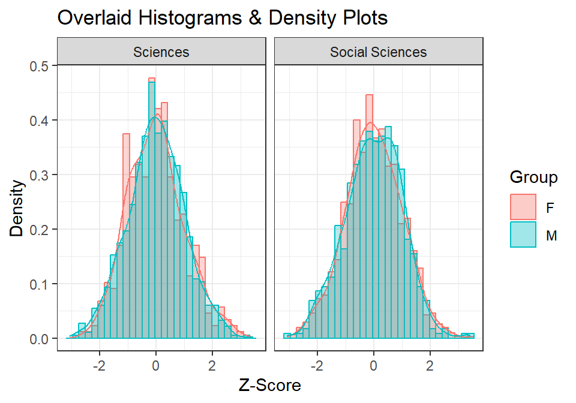
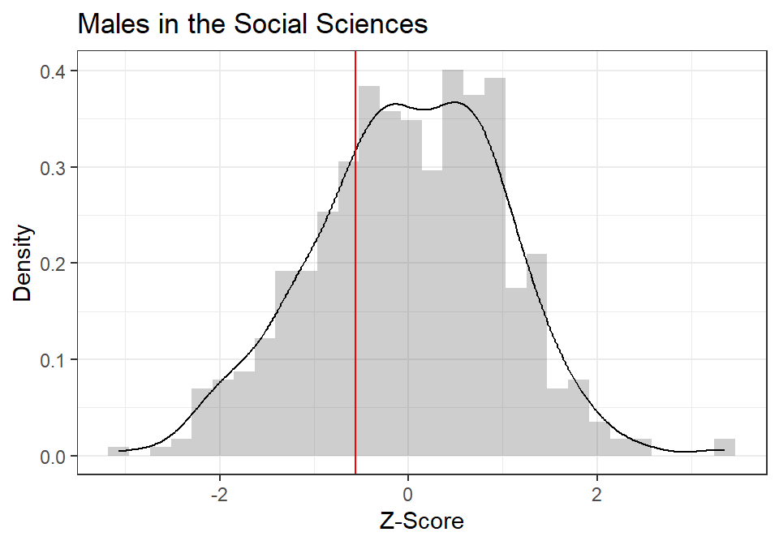
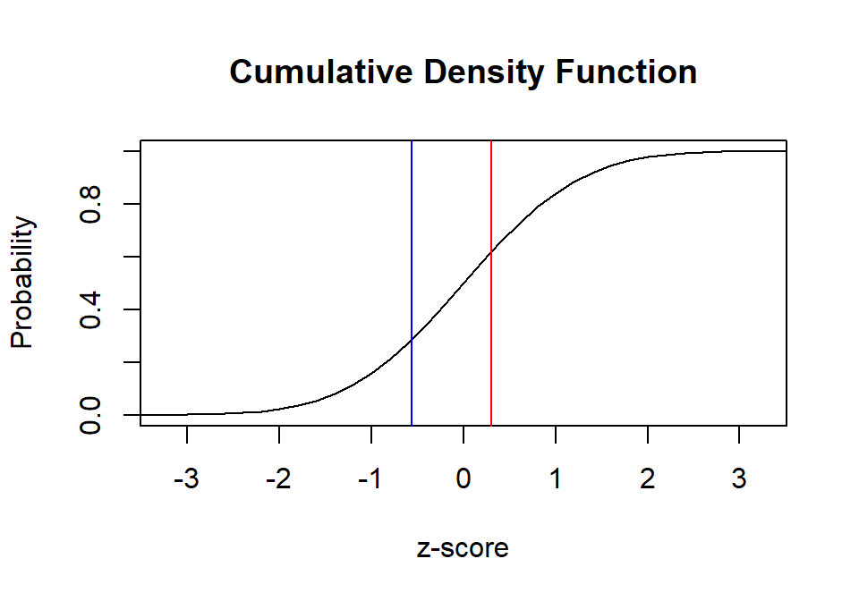

4 Distributions and their Moments
4.1 What is a distribution?
A distribution is a picture of how values spread out in a population:
- Where do most observations fall?
- How much do they vary?
- Is it symmetric, or does it have a long tail?
The average alone cannot answer these questions. Two groups can have the same mean while one forms a tidy hill and the other consists of people at both extremes glaring across an empty middle. A mean without its distribution is a witness who has omitted several important details.
4.1.1 A real distribution
Income in the US is a classic positively-skewed distribution: most households cluster around moderate incomes, with a few earning very large amounts.
This plot uses binned Census data (U.S. Census Bureau 2024), so the mean and median are approximations. Also: the $200k+ bin is everything from $200k to infinity—so if it’s the tallest bar, that doesn’t mean $200k is the most common income. It just means rich people got lumped together.
That open-ended bin also means our mean below is too low. We estimate each bin by its midpoint, and “$200,000 to infinity” has no midpoint, so those households get dropped. Census reports a higher mean than we compute here for exactly that reason. The richest households are the ones you cannot put a midpoint on, and they are precisely the ones dragging the real mean upward.
Think about it:
- Why is there a positive skew (the tail points right on the x-axis, toward the larger numbers)?
- Which number—mean = $110K, median = $80K, or mode = $32K—best represents the “average” American? Why?
- Notice the three numbers are not close to each other. If a politician wanted to claim Americans are doing great, which one would they quote? If they wanted to claim the opposite?
4.1.2 A sidenote for the curious
Suppose a policy substantially reduced the highest incomes and moved that money into schools, housing, and infrastructure.
Predict: how would the income distribution shift? What would happen to the mean, median, and mode? Be explicit about why each one would (or would not) change. This is a distribution question, not a political one—the same reasoning works if you run the policy backward.
4.1.3 Distributions have meaning
Governments tend to use median income to decide who qualifies for financial aid, housing assistance, school lunch programs, tax credits, and healthcare subsidies.
When a distribution is highly skewed, these numbers tell very different stories. A rising mean can make a country look richer even when most households see no change—the median may stay flat. Understanding the shape helps us see who’s actually benefiting from policy decisions.
ImportantThe Mean Can Be Correct and Still Mislead You
In a strongly skewed distribution, a small number of enormous values can drag the mean upward.
That does not make the mean mathematically wrong. It may simply describe the US income inequality problem rather than the experience of a typical person.
Always inspect the distribution before allowing the mean to speak for everyone.
4.2 Gaussian (Normal) Distribution
Imagine a general cognitive measure influenced by many small factors: sleep, attention, schooling, mood, caffeine, random neural noise, and whether a bat-wielding researcher was standing behind the participant. When many small influences add together, scores can form a smooth, symmetric hill. That hill is the normal distribution.
The Gaussian distribution (named after Carl Friedrich Gauss, 1777–1855) is the foundation of classical parametric statistics because (we pretend) it describes a huge range of psychological phenomena.
Two parameters fully define it:
- \(\mu\) (mean)—where the center is
- \(\sigma\) (standard deviation)—how spread out it is
A normal distribution has skewness of zero and excess kurtosis of zero. However, those two values alone do not prove that a distribution is normal; very strange distributions can share the same moments. The mean, variance, skewness, and kurtosis are commonly described through the distribution’s moments. They summarize important features, but they are not a magical distribution-identification scanner.
WarningNormality Is a Model, Not a Moral Achievement
“Normal” describes a mathematical distribution. It does not mean healthy, desirable, typical, or free from bat-wielding researchers.
A normal distribution has zero skewness and zero excess kurtosis, but matching those two values does not prove that your data are normal. Plot the distribution. Numbers are capable of lying by omission.
4.2.1 Simulating a Population in R
NoteYou Do Not Know These Words Yet, and That Is Fine
The code below asks for a mean and a standard deviation, and I have not taught you either one. On purpose.
Right now this is just a machine for manufacturing a million fake people so we have something to look at. By the end of this chapter you will know exactly what every term in it means, and you can come back and read it again with the smug satisfaction of someone who understands the joke the second time.
We’ll use the normal distribution as our population. R makes this easy with rnorm().
Let’s create a population with:
- \(\mu = 100\) points (cognitive score)
- \(\sigma = 15\) points
- \(N = 1,000,000\)
set.seed(42) # so your million fake people are the same as my million fake people
n <- 1e6 # 1e6 is scientific notation for 1,000,000
Mu <- 100 # population mean
S <- 15 # population SD
# rnorm() = "random normal". Draw n scores from a normal distribution
# with the mean and SD we just specified.
Normal.Sample.1 <- rnorm(n, mean = Mu, sd = S)4.2.2 Histogram (Base R)
hist(Normal.Sample.1,
breaks = 30,
col = "lightblue",
border = "black",
main = "Raw Score Histogram",
xlab = "Population Distribution",
ylab = "Frequency")
abline(v = Mu, col = "black")
Looks normal. Now let’s describe its shape using the 4 moments.
4.3 Moments
Four numbers capture the important features of a distribution: center, spread, symmetry, and peakiness.
NotePedantic Fine Print for Graduate Students
Calling all four of these “the moments” is teaching shorthand. Strictly, the mean is the first raw moment, the variance is the second central moment, and skewness and kurtosis are the third and fourth standardized moments. Nobody at a party cares.
4.3.1 Moment 1: Central Tendency
The center of a distribution can be described three ways:
Mean (the average):
- Standard measure of central tendency
- Heavily influenced by outliers
- Most stable estimate from sample to sample
Median (the middle number):
- Not sensitive to outliers
- Best measure when the distribution is skewed
Mode (most common number):
- Least stable from sample to sample
4.3.2 Mean
\[M = \frac{\Sigma X}{N}\]
Add up every score, divide by how many there are. You have done this since grade school.
ImportantTwo Symbols for the Mean, and You Will Only Ever Have One of Them
There is a mean of the population, written \(\mu\) (the Greek letter mu, said “mew”), and a mean of your sample, written \(M\).
They are not two names for the same thing. \(\mu\) is the real answer, the average of every person in the population, and you will almost certainly never know it. It exists, it is a fixed number, and it is none of your business. \(M\) is what you get when you grab a handful of people and average them. It is your estimate of \(\mu\), and it is the only one of the two you will ever hold in your hand.
This chapter is a rare exception, because I built the population myself and can therefore cheat. I told R that \(\mu = 100\). In a real study nobody hands you that number, which is exactly why the next several chapters exist.
The same split is coming for spread: \(\sigma\) for the population, \(S\) for your sample. Same relationship, same problem, same resignation.
SumX <- sum(Normal.Sample.1) # add up every score
N <- length(Normal.Sample.1) # count how many scores there are
M <- SumX / N # divide: that is the mean
M[1] 100.0086# Or all at once:
M <- sum(Normal.Sample.1) / length(Normal.Sample.1)The mean was 100.01—close to our target \(\mu\) of 100, though notice it is not exactly 100 even with a million people. But just use the built-in:
mean(Normal.Sample.1)[1] 100.00864.3.3 Median
median(Normal.Sample.1)[1] 100.0208Want to do it by hand? This is a good excuse to explain what a function actually is, because you have been using them since Chapter 2 without anyone defining the word.
A function is a machine you build once and then use forever. You hand it something, it does its work, it hands something back. mean() is a function: you hand it numbers, it hands back their average. So is sort(), and length(), and every other word in this book followed by parentheses.
You can build your own with function(). The thing in the parentheses is the argument, the placeholder for whatever gets handed in. Here is the median, built from scratch:
# Define a function called calculate_median that takes one input, x.
calculate_median <- function(x) {
sorted_x <- sort(x) # step 1: put the scores in order, smallest to largest
n <- length(sorted_x) # step 2: count how many there are
if (n %% 2 == 1) { # step 3: is n odd? (%% gives the remainder after dividing)
sorted_x[(n + 1) / 2] # odd, so there is one number dead in the middle. Take it.
} else {
# even, so there is no single middle. Take the two middle numbers
# and average them.
(sorted_x[n / 2] + sorted_x[(n / 2) + 1]) / 2
}
}
# Now USE the machine we just built.
calculate_median(Normal.Sample.1)[1] 100.0208Two bits of syntax worth naming, because they show up constantly:
sorted_x[3]means “the 3rd item insorted_x.” Square brackets pull items out by position.%%is the remainder operator.7 %% 2is 1, because 7 divided by 2 leaves 1 over. Son %% 2 == 1is R’s way of asking “is n odd?”
Same answer as median(). Lots of code. This is why R has built-in functions!
4.3.4 Mode
No built-in mode function in R for continuous data—and it’s almost never used for normal distributions. Note: mode() in R tells you the type of an object (numeric, factor, etc.), not the statistical mode.
4.3.5 Moment 2: Spread
Variance describes how spread out a distribution is. In psychology we mostly use variance and standard deviation because they work well with normal distributions and parametric statistics.
Variability comes from:
- Individual differences (genetics, mood, experience—what they ate for lunch that day)
- Research/environment factors (testing conditions, context—the researcher wearing a blood-soaked white coat)
- Measurement effects (fatigue, questions priming answers—don’t think about a pink elephant)
When estimating variance from a sample, we divide by \(N - 1\) instead of \(N\) to get an unbiased estimate. This is called degrees of freedom.
That sentence is true and completely unhelpful, so let us do better. There are two questions hiding in it, and students ask both of them every single year.
4.3.6 Why Square the Deviations?
Start with the obvious idea: to measure spread, average how far each score sits from the mean. Try it.
x <- c(2, 4, 4, 4, 5, 5, 7, 9)
x - mean(x) # each score's distance from the mean[1] -3 -1 -1 -1 0 0 2 4sum(x - mean(x)) # add them all up[1] 0Zero. Not close to zero—zero. It will be zero for every data set you will ever collect, because that is what a mean is: the balance point where the negatives and positives cancel exactly.
So the honest average distance is useless as a measure of spread. Squaring fixes it: every squared deviation is positive, nothing cancels, and bigger deviations count for disproportionately more.
4.3.7 Why Divide by \(N-1\) and Not \(N\)?
Here is the intuition. Once you know the mean and all but one of the deviations, the last deviation is not free—it is forced to be whatever makes the sum come out to zero. Eight numbers, but only seven of them can vary independently once the mean is fixed. You have \(N-1\) independent pieces of information, so you divide by \(N-1\).
That is the explanation. Here is the proof, because code is an awesome way to settle an argument.
This uses a function you will see constantly from here on: replicate(). It does exactly what the name says. You give it a number and a block of code, and it runs that code that many times, collecting every answer. replicate(10000, ...) means “do this ten thousand times and keep all ten thousand results.” It is how we run a study over and over without recruiting a single human.
set.seed(343)
# The truth: a population with variance of exactly 25 (because SD = 5, and 5^2 = 25).
truth <- 25
# Run the following block 10,000 times, keeping every answer.
estimates <- replicate(10000, {
s <- rnorm(8, mean = 100, sd = 5) # grab a tiny sample of 8 people
deviations <- (s - mean(s))^2 # squared distance of each score from ITS OWN mean
# Compute the variance two ways and return both.
c(divide_by_N = sum(deviations) / 8, # the tempting way
divide_by_N_1 = sum(deviations) / 7) # the N-1 way
})
# estimates now holds 10,000 answers of each kind. Average them.
round(rowMeans(estimates), 2) divide_by_N divide_by_N_1
21.80 24.91 Dividing by \(N\) gives an answer that is systematically too small. Dividing by \(N-1\) lands closer to the truth. Ten thousand samples do not lie, and now you never have to wonder whether that \(-1\) is a typo. I will have lots of typos in other places for you to find.
4.3.8 Variance and SD
Population variance (when we have the entire population and know \(\mu\)): \[\sigma^2 = \frac{\Sigma (X-\mu)^2}{N}\]
Sample variance, using \(N-1\) to estimate population variance: \[S^2 = \frac{\Sigma (X-M)^2}{N-1}\]
ImportantGreek Letters Are the Truth; Roman Letters Are Your Guess
You just met the second pair, so here is the rule that runs through the entire rest of this book.
| Population (the truth) | Sample (your estimate) | |
|---|---|---|
| Mean | \(\mu\) (mu) | \(M\) |
| Variance | \(\sigma^2\) (sigma squared) | \(S^2\) |
| Standard deviation | \(\sigma\) (sigma) | \(S\) |
Greek letters describe the population. They are fixed, real, and almost always unknowable.
Roman letters describe your sample. They are computed from data you actually collected, they change every time you collect new data, and they are your best available guess at the Greek letter sitting behind them.
So \(M\) is your guess at \(\mu\), and \(S\) is your guess at \(\sigma\). When you see a Greek letter in a formula, ask yourself where that number is supposed to come from, because in real research the answer is usually “nowhere, and that is the problem we are about to solve.”
R vectorizes this for you (turns into a string of numbers), but watch your parentheses. The built-in var() uses \(M\) and \(N-1\):
Variance.M <- var(Normal.Sample.1)Sample variance = 225.47
\[S = \sqrt{S^2}\]
SD.calc <- sd(Normal.Sample.1)Sample SD = 15.02
NoteVariance Has Weird Units; SD Comes Back Home
Variance is measured in squared units.
- If reaction time is measured in seconds, variance is measured in seconds squared.
- If exam scores are measured in points, variance is measured in points squared.
- If cookie-dough devotion is measured in questionable rating units, variance uses questionable rating units squared.
Standard deviation takes the square root of variance, returning to the original units. That is one reason SD is easier to interpret.
4.3.9 A Dot Plot: Where Does One Standard Deviation Live?
The standard deviation is a measure of the typical distance of scores from the mean. It is calculated from every score’s distance from the mean. It is not defined by capturing a particular percentage of people. But what does typical distance mean? What do truth and god mean, for that matter? Well, to quote the great teacher G’Kar, truth is a river and god is the mouth of that river. Note: if you got that joke, you are a super nerd and we can be friends.
The typical distance concept applies really only when the distribution is approximately normal and the standard deviations divide the distribution in a very useful and predictable way:
- About 34% of scores fall between the mean and one SD below the mean.
- About 34% fall between the mean and one SD above the mean.
- Put those pieces together, and about 68% fall within one SD of the mean.
- About 95% fall within two SDs of the mean.
Let us make that visible with an extremely central psychological construct: love of cookie-dough ice cream.
We ask 240 people:
How much do you like cookie-dough ice cream?
They answer on a 1–10 unipolar rating scale:
- 1 = Not at all
- 10 = I would trade my mother for cookie-dough ice cream
The scale is unipolar because it begins with none of the feeling and moves in one direction toward more of it. The opposite endpoint is not “I hate cookie-dough ice cream with the fire of a thousand suns.” That would be a bipolar scale and clearly a cry for professional help.

In this particular simulated sample, 76.2% of ratings fall within one SD of the mean and 93.3% fall within two SDs. Those values will not equal exactly 68% and 95%. These are discrete ratings from one sample, not obedient dots hired to impersonate a perfect normal curve. Chance is fickle, and a 1–10 scale also has walls at both ends.
The important visual intuition is this: one SD takes us from the mean through the thick central part of a normal distribution. Two SDs cover nearly everybody. A score farther than two SDs from the mean is unusual, although “unusual” does not automatically mean impossible, important, fraudulent, or possessed by evil spirits.
4.3.10 Relationship between \(M\) and \(S\)
The standard deviation is expressed in the same units as the scores, and it does not automatically grow just because the mean grows—although annoyingly, it tends to. For positive ratio-scale variables, the coefficient of variation can compare spread relative to the mean:
\[CV = \frac{S}{|M|}\]
CV <- SD.calc / abs(M)\(CV\) = 0.15.
WarningThe CV Needs a Mean Worth Dividing By
A problem occurs when the mean is close to zero. Dividing by a tiny mean can produce an enormous and unstable CV. If the mean is zero, the CV is undefined.
Therefore, interpret the CV most confidently when zero has a meaningful interpretation, ratios are sensible, and the mean is not hovering near zero while laughing at you.
4.3.11 Moment 3: Skewness
Skewness is how asymmetrical the hill is. Generally, the farther the value is from zero, the more skewed the distribution. Human data will almost always be somewhat asymmetrical, like most of our faces. When people’s ears or eyes are slightly asymmetrical, we generally choose to ignore the problem for reasons—assumptions, really—that we hope are true. More on that later.
The skewness formula is below for completeness. Almost nobody reports the metric.
\[Skewness = \frac{\Sigma(X-M)^3 /N}{S^{3}}\]
library(moments)
SK.Calc <- skewness(Normal.Sample.1)Skewness = 0
4.3.12 Moment 4: Kurtosis
This is peakiness! You can have flattish, longish hills (platykurtic) or skinny, tall hills (leptokurtic). I would be remiss to my mother if I did not point out that these are Greek words. I would also like to point out that nobody has ever confused my body shape with leptokurtotic.
The kurtosis formula is below for completeness. Not only does almost nobody report it, I do not think many people know how to make sense of the numbers it spews out.
\[Kurtosis = \frac{\Sigma(X-M)^4 /N}{S^{4}} - 3\]
K.Calc <- kurtosis(Normal.Sample.1) - 3Kurtosis = 0
4.3.13 All Four Moments via Tidyverse
The tidyverse is a collection of R packages that makes data work readable and consistent. Think of it as data operations in near-plain English: take this data, group it, summarize it, done.
We need three verbs for now:
group_by()—split data into groupssummarise()—compute statistics per groupfilter()—keep only rows we want
First, put our vector into a data frame (R’s version of a spreadsheet—rows are observations, columns are variables):
DF <- data.frame(X = Normal.Sample.1)Now compute all four moments at once:
library(tidyverse) # loads dplyr, ggplot2, and friends
library(moments) # gives us skewness() and kurtosis()
Desc.table <-
DF |> # take the data frame, then...
summarise(N = n(), # count the rows
M = mean(X), # moment 1: center
S = sd(X), # moment 2: spread
CV = S / abs(M), # spread relative to the mean
Skew = skewness(X), # moment 3: lopsidedness
Kurt = kurtosis(X) - 3) # moment 4: tails (minus 3 = "excess")
round(Desc.table, 2) N M S CV Skew Kurt
1 1e+06 100.01 15.02 0.15 0 0That |> is a pipe. Read it as the word “then.” It takes whatever is on its left and feeds it into the function on its right, so DF |> summarise(...) means “take DF, then summarise it.” It saves you from writing summarise(DF, ...) with everything crammed inside one set of parentheses, and it gets very handy once you are stacking four or five operations.
TipAbout All Those Plots I Keep Making Without Explaining Them
You have now seen several figures built with ggplot(), and I have never once told you how it works. That is deliberate. Explaining the grammar of graphics in the middle of a chapter about variance would help nobody.
There is a whole chapter on ggplot() and the tidyverse at the end of the book. When you want to make your own plots rather than read mine, go there. For now, feel free to copy any plotting code you see, change the variable names, and see what happens. That is how everyone learns it anyway.
4.4 Distributions and Probability
A distribution isn’t just a picture of data—it lets us make probability statements.
The height of the curve at any point tells us how likely values near that point are. This is the Probability Density Function (PDF).
4.4.1 Probability Density Function (PDF)
\[f(x) = \frac{1}{\sqrt{2\pi\sigma^2}} e^{-\frac{(x - \mu)^2}{2 \sigma^2}}\]
Looks scary. The concept is simple:
- Values near the mean \(\rightarrow\) highest density
- Values far from the mean \(\rightarrow\) lower density
- Shape is fully determined by \(\mu\) and \(\sigma\)
In practice, we convert to z-scores so that mean = 0 and SD = 1, which makes everything easier.
4.4.2 Z-scores
A z-score tells you how far a value is from the mean in standard deviation units:
- z = 0 \(\rightarrow\) exactly at the mean
- z = 1 \(\rightarrow\) one SD above the mean
- z = −1 \(\rightarrow\) one SD below the mean
Converting to z-scores does not change the shape of the distribution—it just re-labels the axis.
\[Z = \frac{X - M}{S}\]
ImportantA z-Score Is Not a Probability
A z-score tells us how far a score is from the mean in standard-deviation units.
It does not directly tell us the percentage of people below that score. To obtain a percentile, we must use the appropriate distribution—usually with pnorm() when normality is a reasonable model.
A z-score of 1 means one SD above the mean. It does not mean 1%, 10%, or that the participant has won statistics.
4.4.3 Making Z-scores in R
Normal.Sample.Z <- scale(Normal.Sample.1, center = TRUE, scale = TRUE)DF.Z <- data.frame(X = Normal.Sample.Z)
Desc.table.Z <-
DF.Z |>
summarise(N = n(), M = mean(X), S = sd(X))
round(Desc.table.Z, 2) N M S
1 1e+06 0 1The shape doesn’t change:
hist(Normal.Sample.Z,
breaks = 30,
col = "lightblue",
border = "black",
main = "Z Score Histogram",
xlab = "Population Distribution",
ylab = "Frequency")
abline(v = 0, col = "black")
4.4.4 Finding Probability from Z-scores
Two functions to know:
dnorm()\(\rightarrow\) height of the curve (density) at a valuepnorm()\(\rightarrow\) area under the curve to the left of a value (probability)
The PDF dnorm() implements:
\[f(x) = \frac{1}{\sqrt{2\pi\sigma^2}} e^{-\frac{(x - \mu)^2}{2 \sigma^2}}\]

dnorm() draws that curve; pnorm() measures the area underneath it.4.4.5 How much of the population is below the mean?
Exactly 50%—the normal distribution is symmetric. Confirm it:
pnorm(0)[1] 0.5What proportion falls between 1 and 2 SDs above the mean?
pnorm(2) - pnorm(1)[1] 0.1359051No calculus. Just area under the curve.
4.4.6 Going the Other Way
pnorm() takes a score and hands back a proportion. Half the questions you will actually be asked run the other direction: what score do you need to be in the top 10%? That is qnorm().
qnorm(.90) # the z-score that cuts off the top 10%[1] 1.281552A z of 1.28. Convert back to raw cognitive-score units with \(M + zS\):
100 + qnorm(.90) * 15[1] 119.2233So you need about 119 points to crack the top 10%. Cutoffs for gifted programs, clinical screening thresholds, and “we only interview the top 5% of applicants” are all this calculation wearing different toupees.
You can also ask the data directly instead of the theoretical curve. quantile() finds the actual score at a given percentile in your sample:
quantile(Normal.Sample.1, .90) 90%
119.2508 Nearly identical, because we built this population to be normal. On real data the two can disagree, and when they do, the data is right and the curve was an assumption.
4.5 Real-World Example: Mental Rotation Test
We now know how to:
- Describe distributions
- Standardize scores with z-scores
- Convert z-scores to probabilities
Let’s apply all of it to a real psychological measure.
The Mental Rotations Test (MRT) measures spatial visualization ability. Peters et al. developed a redrawn version and examined factors affecting performance (Peters et al. 1995). Here’s a summary by field and gender:
| Sciences | Social Sciences & Humanities | ||||||
|---|---|---|---|---|---|---|---|
| n | M | SD | n | M | SD | ||
| M | 817 | 15.23 | 4.42 | 517 | 12.74 | 4.87 | |
| F | 392 | 11.18 | 4.37 | 1358 | 8.75 | 4.18 |
WarningAdvanced Code Has Arrived Early
The code below is more advanced; you do not need to understand it yet. Why am I showing you crazy code now? To make you feel bad about yourself and the terrible life choices you made when you took a statistics class!
Actually, I want you to see what R can do. I can go from a table to simulation, graphs, and analysis without a lot of code. Simulating data is my favorite way to make graduate students cry when they propose dissertations because it is the fastest way to discover whether the theory and hypotheses they proposed make any sense. When they do not, the students cry and Dorkaos, our God of Statistics, gains more strength.
4.5.1 Step 1: Simulate the population distributions
We only have summary stats, but because MRT scores are approximately normal we can simulate each group using rnorm().
library(tidyverse)
set.seed(123)
params <- tribble(
~Field, ~Group, ~n, ~mean, ~sd,
"Sciences", "M", 817, 15.23, 4.42,
"Sciences", "F", 392, 11.18, 4.37,
"Social Sciences", "M", 517, 12.74, 4.87,
"Social Sciences", "F", 1358, 8.75, 4.18
)
MRT.2 <- params |>
mutate(data = pmap(list(n, mean, sd), rnorm)) |>
unnest(data) |>
select(Field, Group, Value = data)Check that our simulation matches published values:
MRT.table <-
MRT.2 |>
group_by(Field, Group) |>
summarise(N = n(), M = mean(Value), S = sd(Value))
MRT.table# A tibble: 4 x 5
# Groups: Field [2]
Field Group N M S
<chr> <chr> <int> <dbl> <dbl>
1 Sciences F 392 11.4 4.47
2 Sciences M 817 15.3 4.34
3 Social Sciences F 1358 8.74 4.16
4 Social Sciences M 517 12.9 4.884.5.2 Step 2: Visualize the distributions
ggplot(MRT.2, aes(x = Value, fill = Group, color = Group)) +
geom_histogram(aes(y = after_stat(density)), position = "identity", alpha = 0.3, bins = 30) +
geom_density(alpha = 0.1) +
facet_wrap(~ Field) +
labs(title = "Overlaid Histograms & Density Plots", x = "Score", y = "Density") +
theme_bw()
4.5.3 Step 3: Convert to z-scores (within groups)
Standardize within each group—critical because each group has a different mean and SD.
MRT.2 <- MRT.2 |>
group_by(Field, Group) |>
mutate(Z = scale(Value))
MRT.2 |> head()# A tibble: 6 x 4
# Groups: Field, Group [1]
Field Group Value Z[,1]
<chr> <chr> <dbl> <dbl>
1 Sciences M 12.8 -0.583
2 Sciences M 14.2 -0.247
3 Sciences M 22.1 1.58
4 Sciences M 15.5 0.0594
5 Sciences M 15.8 0.119
6 Sciences M 22.8 1.73 ggplot(MRT.2, aes(x = Z, fill = Group, color = Group)) +
geom_histogram(aes(y = after_stat(density)), position = "identity", alpha = 0.3, bins = 30) +
geom_density(alpha = 0.1) +
facet_wrap(~ Field) +
labs(title = "Overlaid Histograms & Density Plots", x = "Z-Score", y = "Density") +
theme_bw()
Why do the curves overlap now? Because standardizing compares relative position within each group, not raw scores.
4.5.4 Step 4: Z-score to probability
Alex (male, social sciences) got a score of 10. How did he do relative to his peers? (Males, Social Sciences: \(M\) = 12.74, \(S\) = 4.87)
Z.Alex <- (10 - 12.74) / 4.87
Z.Alex[1] -0.5626283A little over half an SD below the mean. Visually:
MRT.2.Males.Social.Sciences <- MRT.2 |> filter(Group == "M" & Field == "Social Sciences")
ggplot(MRT.2.Males.Social.Sciences, aes(x = Z)) +
geom_histogram(aes(y = after_stat(density)), position = "identity", alpha = 0.3, bins = 30) +
geom_density(alpha = 0.1) +
labs(title = "Males in the Social Sciences", x = "Z-Score", y = "Density") +
theme_bw() +
geom_vline(xintercept = Z.Alex, color = 'red')
pnorm(Z.Alex)[1] 0.286844Only better than 28.7% of peers. That’s also called a percentile.
4.5.5 Step 5: Same raw score, different meaning
Emma also scored a 10, but she’s in a different group (Female, Social Sciences: \(M\) = 8.75, \(S\) = 4.18).
Z.Emma <- (10 - 8.75) / 4.18
Z.Emma[1] 0.2990431pnorm(Z.Emma)[1] 0.6175464Emma scored better than 61.8% of her peers.
curve(pnorm, from = -10, to = 10,
main = "Cumulative Density Function",
xlab = "z-score", ylab = "Probability",
xlim = c(-3.25, 3.25))
abline(v = Z.Emma, col = "red")
abline(v = Z.Alex, col = "blue")
Same raw score. Emma is above average for her group; Alex is below average for his. Raw scores mean nothing without context.
4.5.6 Big idea
- Raw scores mean nothing without context.
- Distributions give scores meaning.
4.6 The Short Story
- A distribution shows which values occur and how often.
- The mean locates the center; variance and standard deviation describe spread.
- Skewness describes asymmetry; kurtosis describes tail weight and peak shape relative to a reference distribution.
- Zero skewness and zero excess kurtosis do not prove normality. Strange distributions are capable of wearing fake mustaches.
- z-scores translate raw scores into standard-deviation units.
- The same raw score can mean very different things in different reference groups.
- Always inspect the distribution before asking one summary number to represent several hundred people without supervision.
Peters, Michael, Bruno Laeng, K. Latham, M. Jackson, R. Zaiyouna, and C. Richardson. 1995. “A Redrawn Vandenberg and Kuse Mental Rotations Test: Different Versions and Factors That Affect Performance.” Brain and Cognition 28 (1): 39–58. https://doi.org/10.1006/brcg.1995.1032.
U.S. Census Bureau. 2024. Historical Income Tables: Households. https://www.census.gov/data/tables/time-series/demo/income-poverty/cps-hinc/hinc-01.2024.html.